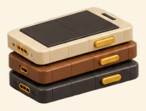

Соберёте начало рилса так, чтобы его не пролистывали, и будете выпускать ролики без монтажёра.
1
Первые 3 секунды
почему всё решается там
2
Фраза-обещание
4–6 слов на экране
3

Экран
три правила
4
Чек-лист перед публикацией
Почему всё решают первые 3 секунды
Охват решают первые 3 секунды
Instagram сначала показывает рилс небольшой группе людей. Если они сразу листают дальше, показ останавливается. Я разобрал 14 своих рилсов: там, где сразу пролистали меньше 46% зрителей, охват был в 4 раза выше.
Пролистали меньше 46%
4 816
медиана охвата
Пролистали больше 46%
1 098
медиана охвата
×4
разница в охвате
Смотрите в статистике рилса, какая доля зрителей пролистала его сразу. Это главная цифра.
Мои 14 рилсов, статистика Instagram на 19 сентября 2026. 46% это граница на моих роликах, не закон платформы.